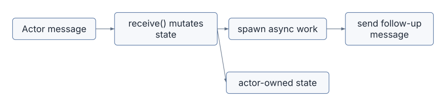
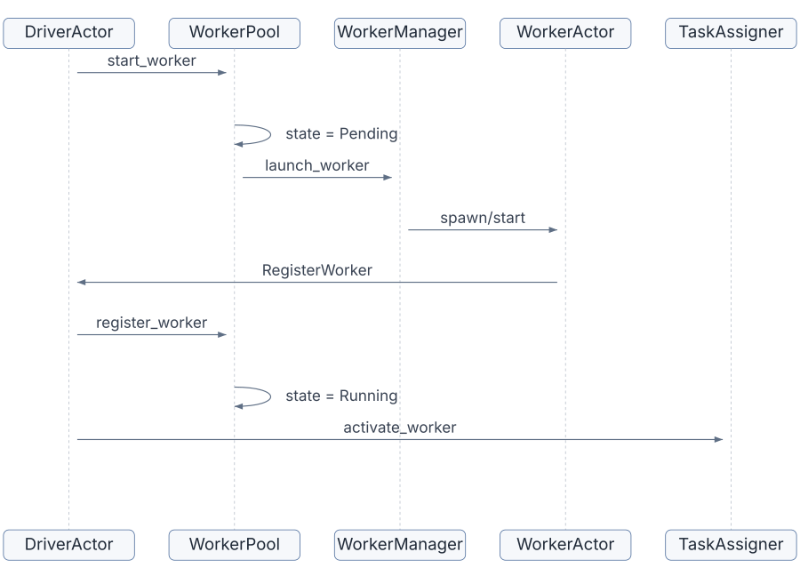
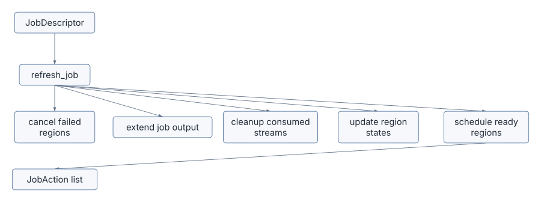
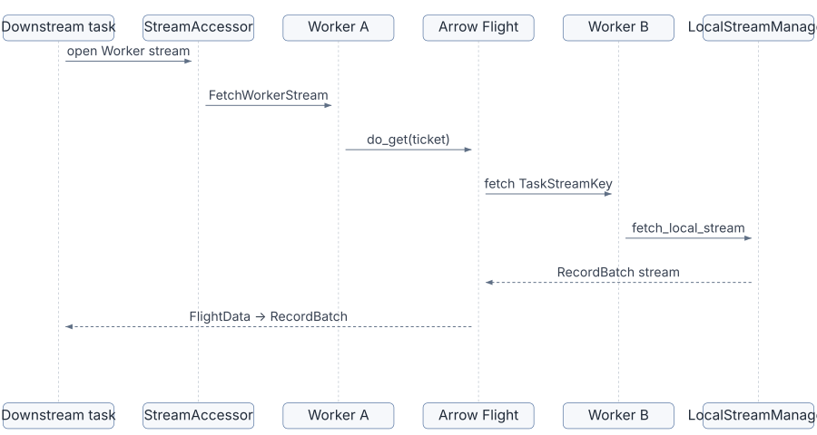
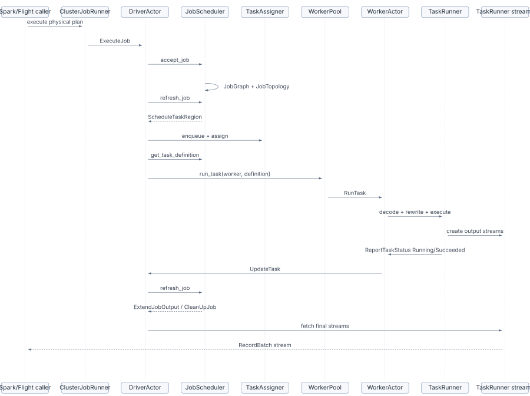

Chapter 7 explained how Sail turns a DataFusion physical plan into a distributed job graph. This chapter follows that graph into motion.
The job graph says what should run:
The driver, workers, task assigner, task runner, and stream managers decide how that work actually happens.
If Chapter 7 was the map, Chapter 8 is the traffic system.
| Area | Files | Role |
|---|---|---|
| Actor runtime | crates/sail-common/src/actor.rs |
Small async actor system used by the driver and workers |
| Driver actor | crates/sail-execution/src/driver/actor/*.rs |
Accepts jobs, workers, task updates, stream requests, and shutdown |
| Driver events | crates/sail-execution/src/driver/actor/message.rs |
Message protocol for the driver actor |
| Worker actor | crates/sail-execution/src/worker/actor/*.rs |
Registers with driver, receives tasks, reports status, serves/fetches streams |
| Worker events | crates/sail-execution/src/worker/actor/message.rs |
Message protocol for worker actor |
| Worker pool | crates/sail-execution/src/driver/worker_pool/*.rs |
Launches, registers, monitors, and talks to workers |
| Task assigner | crates/sail-execution/src/driver/task_assigner/*.rs |
Maps task regions to driver or worker task slots |
| Job scheduler | crates/sail-execution/src/driver/job_scheduler/*.rs |
Tracks job state, creates attempts, schedules regions, builds task definitions |
| Task runner | crates/sail-execution/src/task_runner/*.rs |
Executes serialized DataFusion physical plans on driver or worker |
| Stream manager | crates/sail-execution/src/stream/local/ |
Owns local task streams and pending stream fetches |
| Stream accessor | crates/sail-execution/src/stream/accessor.rs |
Implements task stream reader/writer by sending actor messages |
| Stream service | crates/sail-execution/src/stream/service/ |
Uses Arrow Flight to fetch task streams across processes |
| Worker managers | crates/sail-execution/src/worker_manager/*.rs |
Launches local or Kubernetes workers |
The chapter will follow a single distributed query from the moment the cluster runner sends it to the driver until final Arrow batches are returned.
Sail’s driver and workers are actors. The actor runtime lives in
crates/sail-common/src/actor.rs.
The trait is small:
pub trait Actor: Sized + Send + 'static {
type Message: Send + SpanAssociation + 'static;
type Options;
fn name() -> &'static str;
fn new(options: Self::Options) -> Self;
async fn start(&mut self, ctx: &mut ActorContext<Self>) {}
fn receive(&mut self, ctx: &mut ActorContext<Self>, message: Self::Message) -> ActorAction;
async fn stop(self, ctx: &mut ActorContext<Self>) {}
}Messages are processed sequentially:
while let Some(MessageEnvelop { message, context }) = self.receiver.recv().await {
let action = self.actor.receive(&mut self.ctx, message);
...
self.ctx.reap();
}That gives actor state a simple programming model: the actor mutates its own fields without locks because only one message is handled at a time.
But the actor must not block. The trait comment says blocking work
should be spawned through ActorContext::spawn. That pattern
appears everywhere in driver and worker code:
The actor system gives Sail a clean split:
receive,
This is the control-plane style behind Sail’s distributed runtime.
DriverActor is defined across
crates/sail-execution/src/driver/actor.
Its constructor builds WorkerPool,
JobScheduler, TaskAssigner and
WorkerScaler. The task runner starts separately, with local
streams and the configured storage or Celeborn support assembled during
actor startup. The current actor does not contain the older monolithic
StreamManager shown in previous editions.
These components divide responsibility: the worker pool tracks workers and their clients; the job scheduler tracks jobs and attempts; the task assigner manages assignment; the scaler manages worker demand. The driver also tracks task-status sequence numbers so stale reports do not overwrite newer observations.
The driver creates its task-runner child and stream extensions during
startup. Follow driver/actor/core.rs for construction and
driver/actor/handler.rs for message handling.
Server/gateway integration is separate from the worker’s
ServerMonitor; an old self.server field sketch
is not the current driver constructor.
WorkerActor::new creates its driver clients, metrics
sender and server monitor. At startup it creates
LocalStreamManager, optional storage or Celeborn support,
and a TaskRunnerActor child.
TaskRunnerPlacement distinguishes driver execution from
worker execution while reusing the task-runner implementation.
The worker server combines the worker RPC service and an Arrow Flight
service. Its Flight fetcher sends
TaskRunnerMessage::FetchLocalStream to the task runner.
WorkerMessage::ServerReady reports the actual listening
port and supplies the shutdown signal. Heartbeat startup and shutdown
are worker lifecycle messages; task batches are handled by the
task-runner path described below.
The worker lifecycle starts in the driver
WorkerPool.
start_worker:
WorkerId.WorkerDescriptor in Pending
state.WorkerManager to launch the
worker.The launch options include:
For local cluster mode, LocalWorkerManager spawns a
WorkerActor in a local actor system:
let options = WorkerOptions::local(id, options, self.runtime.clone(), self.session.clone());
system.spawn::<WorkerActor>(options);For Kubernetes mode, the worker manager uses the Kubernetes worker
manager implementation. The driver side does not care which launch
strategy is used; it just waits for a RegisterWorker
event.
When registration arrives:
worker.state = WorkerState::Running {
host,
port,
updated_at: Instant::now(),
heartbeat_at: Instant::now(),
client: None,
};Then the driver schedules:

Workers send heartbeats to the driver. The driver records the latest heartbeat:
if let WorkerState::Running { heartbeat_at, .. } = &mut worker.state {
*heartbeat_at = Instant::now();
Self::schedule_lost_worker_probe(ctx, worker_id, worker, &self.options);
}If the lost-worker probe fires and the heartbeat is stale, the driver:
The handler in driver/actor/handler.rs makes that
explicit:
let keys = self.task_assigner.find_worker_tasks(worker_id);
self.task_assigner.deactivate_worker(worker_id);
for key in keys.iter() {
self.job_scheduler.update_task(
key,
TaskState::Failed,
Some(message.clone()),
Some(CommonErrorCause::Execution(message.clone())),
);
}This is the retry story at the worker level. Worker loss becomes task attempt failure. Ordinary retryable jobs may reschedule the region up to their attempt limit. Jobs retaining worker-native graph state instead fail as a whole, as described below.
The job scheduler accepts a job in
crates/sail-execution/src/driver/job_scheduler/core.rs:
let graph = JobGraph::try_new(plan)?;
let (output, stream) = build_job_output(ctx, job_id, graph.schema().clone());
let descriptor = JobDescriptor::try_new(graph, JobState::Running { output, context })?;
self.jobs.insert(job_id, descriptor);After acceptance, the driver calls refresh_job.
refresh_job is the scheduler’s main decision function.
Its comment lists the steps:
The important point is that the scheduler does not immediately schedule every task. It schedules task regions when dependencies allow them.

The driver then executes the returned JobAction
values.
Each stage has tasks. Each task can have multiple attempts:
pub struct TaskDescriptor {
pub attempts: Vec<TaskAttemptDescriptor>,
}An attempt has:
job_output_fetched,When a task region becomes schedulable, the scheduler pushes a new attempt for each task:
attempts.push(TaskAttemptDescriptor {
state: TaskState::Created,
messages: vec![],
cause: None,
job_output_fetched: false,
created_at: Utc::now(),
stopped_at: None,
});Task states are:
CreatedScheduledRunningSucceededFailedCanceledThe driver receives status updates from workers as
DriverMessage::UpdateTask. Those updates include an
optional sequence number. The driver ignores stale updates:
if sequence <= *s {
warn!("{} sequence {sequence} is stale", TaskKeyDisplay(&key));
return ActorAction::Continue;
}This protects the control plane from delayed or duplicate worker status messages.
Task regions are important because Sail schedules and retries them as units. If any task in a region fails, the scheduler cancels other active attempts in that region:
if failed {
for t in ®ion.tasks {
for (a, attempt) in task.attempts.iter_mut().enumerate() {
if !attempt.state.is_terminal() {
attempt.state = TaskState::Canceled;
actions.push(JobAction::CancelTask { key });
}
}
}
}Why cancel the whole region?
Because a region represents a group of tasks that are pipelined or otherwise scheduled together. If one attempt fails, its peers may be producing or consuming streams that are no longer valid for that attempt set. Canceling the region keeps attempt boundaries consistent.
This is the distributed version of “do not mix outputs from different attempts unless the system has explicitly decided to do so.”
The scheduler emits JobAction::ScheduleTaskRegion. The
driver gives the region to TaskAssigner:
self.task_assigner.enqueue_tasks(region);Then run_tasks asks for assignments:
let assignments = self.task_assigner.assign_tasks();
self.task_assigner.track_streams(&assignments);TaskAssigner tracks:
Worker task slots are limited:
task_slots: vec![TaskSlot::default(); self.options.worker_task_slots]Driver task slots can grow:
/// The number of task slot can grow indefinitely.
task_slots: Vec<TaskSlot>Assignment is region-aware.
TaskSlotAssigner::try_assign_task_region only succeeds if
the entire region can be assigned:
for (placement, set) in ®ion.tasks {
match placement {
TaskPlacement::Driver => ...
TaskPlacement::Worker => {
if let Some((worker_id, slot)) = self.next() {
...
} else {
return Err(region);
}
}
}
}If a region cannot fit, it goes back to the front of the queue. This can cause head-of-line blocking, but it preserves scheduling order.
The task assigner also tells the driver how many workers to request:
let required_slots = enqueued_slots.saturating_sub(vacant_slots);
let required_workers = required_slots
.div_ceil(self.options.worker_task_slots)
.min(allowed_workers);The driver passes that demand to a separate
WorkerScaler:
self.worker_scaler
.reconcile(self.task_assigner.count_worker_demands())The scaler returns launch requests. The driver starts workers through
WorkerPool::start_worker and binds each worker ID to its
demand. Registration fulfills the demand; a failed launch can schedule a
retry under the configured launch retry strategy. The demand identity
survives that retry, so reconciliation does not repeatedly create fresh
demand for the same failed request.
Initial worker requests count toward the task target. The task
assigner accounts for vacant slots and the configured worker limit; the
scaler manages the lifecycle of the resulting launch demands. This
separates capacity calculation from retry policy. See
crates/sail-execution/src/driver/worker_scaler/core.rs.
After assignment, the driver asks the scheduler for each task definition:
let (definition, context) =
self.job_scheduler.get_task_definition(&entry.key, &self.task_assigner)?;A TaskDefinition contains:
pub struct TaskDefinition {
pub plan: Arc<[u8]>,
pub inputs: Vec<TaskInput>,
pub output: TaskOutput,
}The plan is serialized with DataFusion’s physical plan protobuf support and Sail’s extension codec:
let plan = encode_remote_physical_plan(self.codec.as_ref(), stage.plan.clone())?;Inputs come from stage.inputs, using
InputMode and current task assignments to decide
locations.
For pipelined worker outputs, input keys become:
TaskInput {
stage: input.stage,
locator: Arc::new(TaskInputLocator::Worker { keys }),
}Each key includes:
The task output includes:
This object is the portable description of one task attempt.
DriverActor::run_tasks first reserves task assignments
and tracks their streams. It groups work by job, region, stage and
worker. Within that scheduling snapshot, it constructs one shared
definition per job/stage, marks the tasks scheduled, and sends their
partition/attempt identities as a batch.
Worker batches go through WorkerPool::run_task_batch;
driver batches go to the local task runner. The worker-pool path
supplies peer locations, sends the batch over gRPC and reports dispatch
failures for the affected tasks. Reusing a stage definition avoids
repeating its physical-plan serialization for every partition. The batch
still preserves task-region and worker boundaries.
The peer list is optimized by remembering known peers:
let peers = running_workers
.into_iter()
.filter(|x| !worker.peers.contains(&x.worker_id))
.collect();Workers report back which peers they now know, so the driver avoids sending the same location information repeatedly.
Current upstream separates the worker lifecycle actor from task
execution. WorkerMessage covers server readiness, heartbeat
startup and shutdown; there is no WorkerEvent::RunTask in
this source. Worker RPC services route task work to the
TaskRunnerActor, whose
TaskRunnerMessage::RunTaskBatch carries the job, stage,
tasks, definition, task context and peer information.
TaskPreparation in
crates/sail-execution/src/task_runner/preparation.rs
reconstructs and prepares the physical plan. The central sequence
is:
proto_to_physical_plan(context, RemoteExecutionCodec, proto)
-> rewrite_file_scans
-> rewrite_shuffle
-> trace_execution_plan
-> cancellation check
-> execute(task partition, context)This is a flow summary, not a compilable replacement for the
implementation. The returned preparation stream has the completion
schema of ShuffleWriteExec, not the schema of the stage’s
data batches.
The file-scan rewrite has an important distributed correctness purpose. A DataFusion scan may share a queue among sibling partitions in one process. Sail reconstructs a separate plan for each distributed task; recreating that shared queue in every task could make every task scan every file. The rewrite sets preserve-order on the file configuration to keep each task on its assigned file group. For Parquet without an expression adapter, it installs Sail’s schema evolution adapter.
Shuffle preparation replaces StageInputExec placeholders
with concrete readers from TaskStreamFactory. It validates
input indexes against the task definition. The writer side connects the
task’s output to the selected stream backend. The task runner owns
execution and reporting; the worker lifecycle actor owns readiness and
shutdown coordination.
On the experimental extension branch, decoding must additionally reconstruct worker-native regions using the installed package and host-issued task scope. That scope supplies job/owner identity; extension payloads do not authorize their own worker identity. Native state cleanup follows the job lifecycle, while retained buffers keep their resource owners until final release.
The task runner does not simply obtain a stream and report success.
It supervises a TaskMonitor that polls the stream to
completion.
The monitor first reports Running:
let _ = handle.send(Self::running(key.clone())).await;Then it races execution against cancellation:
tokio::select! {
x = Self::execute(key.clone(), stream) => x,
x = Self::cancel(key.clone(), signal) => x,
}execute drains the stream:
while let Some(batch) = stream.next().await {
if let Err(e) = batch {
return Failed;
}
}
return Succeeded;This matters because in DataFusion, executing a plan returns a stream. Work may not happen until the stream is polled. If Sail reported success immediately after obtaining the stream, it would be lying. Draining the stream ensures the task really ran and all shuffle writes were closed.
TaskStreamFactory in
crates/sail-execution/src/stream/accessor.rs constructs
readers and writers from the task definition, schema and task-runner
handle. Its private TaskStreamAccessor sends requests to
that actor and awaits their replies.
The reader implements open(partition) and selects the
appropriate fetch method:
| Input locator | Accessor operation |
|---|---|
Driver |
fetch_driver_stream |
Worker |
fetch_worker_stream |
Storage |
fetch_storage_stream |
ShuffleService |
fetch_celeborn_stream |
Writers likewise create local, storage or Celeborn streams. The
physical operators use TaskStreamReader and
TaskStreamWriter; they do not contain actor-message
dispatch or construct network clients. Chapter 9 follows the
multi-channel sink’s write, commit and abort lifecycle.
A TaskStreamKey identifies one stream:
job_id, stage, partition, attempt, channelThat key is the identity that ties together:
The inclusion of attempt is especially important. If a
task is retried, the new attempt writes a different stream key.
Consumers can avoid accidentally mixing data from failed and replacement
attempts.
LocalStreamManager is provided to the task runner
through its extensions. It tracks streams by TaskStreamKey,
including consumers waiting for a producer. Its states distinguish
pending, created and failed streams. Creating an already created stream
is an error; a producer failure is propagated to waiting senders.
create_stream publishes a sink over the appropriate
replicas. fetch_stream resolves a consumer against this
tracked state. Pending-stream probes are TaskRunnerMessage
values, so timeout handling returns through the actor that owns the
stream manager. This is not a separate global stream-manager actor.
Storage and Celeborn streams have their own managers. Local stream removal, object-store cleanup and remote shuffle cleanup must be followed through their respective paths rather than assuming a dropped local channel deletes all data.
The current local stream implementation is
MemoryStream.
Its comment explains the design:
/// A memory stream that can be read multiple times.
/// It maintains multiple replicas of the stream internally.
/// Since [`Arc`] is used inside the record batch, it is relatively cheap
/// to clone the data in multiple replicas.A memory stream has one publisher and multiple receivers:
sender: Option<MemoryStreamReplicaSender>,
receivers: Vec<mpsc::Receiver<TaskStreamResult<RecordBatch>>>,When a batch is written, MemoryStreamReplicaSender tries
to send it to every active replica. If a receiver is full, it uses an
overflow buffer. If a receiver is closed, it drops that replica:
Err(mpsc::error::TrySendError::Closed(_)) => {
dropped = true;
}A closed receiver is not necessarily an error. A downstream
LIMIT may stop reading early. The sink returns
Closed only when all replicas are gone.
This replica design supports JobGraph::replicas(stage):
stages consumed by merge or broadcast may need multiple readers for the
same output stream.
When a task needs a stream from another process, Sail uses Arrow Flight.
The server is TaskStreamFlightServer in
crates/sail-execution/src/stream/service/server.rs. Its
important method is do_get:
TaskStreamTicket.TaskStreamKey.TaskStreamFetcher for the stream.FlightDataEncoderBuilder.let stream = rx.await??;
let stream = stream.map_err(|e| FlightError::Tonic(Box::new(e.into())));
let stream = FlightDataEncoderBuilder::new()
.build(stream)
.map_err(Status::from);The client is TaskStreamFlightClient:
let response = self.inner.get().await?.do_get(request).await?;
let stream = response.into_inner().map_err(|e| e.into());
let stream = FlightRecordBatchStream::new_from_flight_data(stream)?;Again, the data plane is Arrow batches. The control plane moves task keys and locations; Flight moves the batch stream.

PeerTracker stores worker locations received with task
dispatch. It ignores an empty update and inserts newly observed peers.
get_client_set lazily constructs a
WorkerClientSet from the stored location and TLS setting,
then returns a clone. Requesting a client for the worker itself is
rejected; local streams should use the local path. An unknown worker is
also an explicit error.
This cache supplies connectivity, not graph ownership. In Argentea, the execution scope and job placement establish which worker owns a native partition. Knowing a peer’s address is insufficient evidence that it holds the correct snapshot or phase of graph state.
In upstream TaskRunnerActor::handle_close_job, the
runner closes the job’s task registry, removes its local streams and
drops its signals. Stage-specific local cleanup calls the same manager
with an optional stage selector. Storage cleanup uses the storage
manager and task context asynchronously; cleanup failures are reported
rather than silently treated as deletion success.
The experimental branch extends this lifecycle to job-owned native state. Closing tasks is not enough if an extension registry still retains graph partitions. The host closes the registered native owners; active readers and output buffers retain their admitted resources until their final references disappear.
The branch also repairs scheduler task bookkeeping on failed/canceled jobs: nonterminal task records become canceled before unassignment. Success ordering and existing terminal states are preserved. Validate the original failed job, all task attempts, native close receipts and final staging independently. No single observation substitutes for the others.
The job output path begins when final-stage tasks are running or succeeded.
extend_job_output finds final stages and adds their task
streams:
actions.push(JobAction::ExtendJobOutput {
handle: output.handle(),
key,
schema: schema.clone(),
});The driver resolves the stream location from task assignment:
Some(TaskAssignment::Driver) =>
self.stream_manager.fetch_local_stream(ctx, &key)
Some(TaskAssignment::Worker { worker_id, .. }) =>
self.worker_pool.fetch_task_stream(ctx, *worker_id, &key, schema.clone())Then it sends the stream to the JobOutputHandle.
JobOutputStream merges all added streams using
SelectAll. It stays active while new streams may arrive,
then drains remaining streams once the output manager is dropped.
This is how a distributed job becomes one
SendableRecordBatchStream for the caller.
Here is the complete lifecycle in one diagram:

It is a lot of machinery, but each piece has a bounded job.
Sail’s retry model is attempt-based:
The job output stream standardizes data-plane and control-plane
errors through CommonErrorCause, so the client sees
coherent failures whether the error comes from:
For ordinary retryable jobs, region failure can therefore lead to a new attempt. The extension branch adds a stricter rule for jobs containing worker-native state: failure terminates the whole job, including its ordinary relational regions. Retrying a task cannot recover a graph partition lost with its worker. This fail-fast boundary is part of Argentea’s current contract, not transparent recovery of native state.
This part of Sail shows several Rust strengths:
Arc shares immutable plans, schemas, and clients,oneshot channels turn actor messages into
request/response APIs.The design is not “just async Rust.” It is a careful layering:
Actor messages -> scheduler state -> task definitions -> physical plan execution -> stream IOEach layer is explicit enough to inspect and test.
For the final extension chapter, this control plane raises several requirements.
A distributed-safe extension must consider:
TaskDefinition?RemoteExecutionCodec know how to decode it on
workers?This is where a simple plugin API becomes a distributed systems API. A scalar UDF that uses Arrow arrays is easy. A custom physical operator with new stream semantics is much more serious.
Sail’s existing control plane gives us the vocabulary to design those capabilities precisely.
Trace a task from scheduling to worker execution:
crates/sail-execution/src/driver/actor/handler.rs.run_tasks.task_assigner.assign_tasks.job_scheduler.get_task_definition.worker_pool.run_task.crates/sail-execution/src/worker/actor/handler.rs.handle_run_task.task_runner.run_task.crates/sail-execution/src/task_runner/actor/core.rs.execute_plan.At the end, you should be able to say how a stage partition becomes
plan.execute(key.partition, context).
Trace a downstream task reading an upstream worker stream:
TaskPreparation::rewrite_shuffle.StageInputExec<usize> becomes
ShuffleReadExec.StreamAccessor::new(handle.clone()).crates/sail-execution/src/stream/accessor.rs.TaskStreamReader::open.fetch_worker_stream.worker/actor/handler.rs.handle_fetch_worker_stream.TaskStreamFlightClient.LocalStreamManager::fetch_stream.This trace connects the control-plane location lookup to the Arrow Flight data plane.
Trace worker failure handling:
crates/sail-execution/src/driver/actor/handler.rs.handle_probe_lost_worker.worker_pool.stop_worker.task_assigner.find_worker_tasks.job_scheduler.update_task(... Failed ...).refresh_job.cascade_cancel_task_attempts.schedule_task_regions.This shows how infrastructure failure becomes task attempt retry.
Sail’s distributed runtime is actor-driven. The driver actor coordinates jobs, workers, task assignment, stream ownership, and cleanup. Worker actors register with the driver, heartbeat, run serialized task definitions, serve local streams, and report task status.
The task runner turns a serialized DataFusion physical plan back into
an executable plan, rewrites stage inputs into
ShuffleReadExec, wraps outputs in
ShuffleWriteExec, and drains the resulting stream through a
task monitor.
Streams are identified by
(job, stage, partition, attempt, channel). Stream managers
handle pending, created, failed, replicated, and cleaned-up local
streams. Arrow Flight carries streams between processes.
The next chapter zooms in on shuffle and data movement, using the stream and task machinery from this chapter as the foundation.